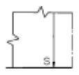
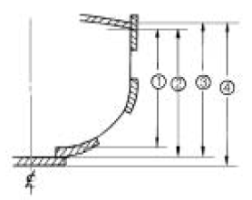
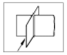
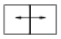
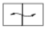
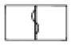
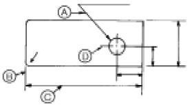

선체건조기능사 (2005-07-17 기출문제)
1과목: 조선공학일반
1. 선체운동 중 만곡부 용골(bilge keel)과 가장 관계가 큰 운동은?
- 종요
- 슬래밍
- 횡요
- 피칭
(정답률: 알수없음)

2. 다음 중 수선면계수와 관계가 없는 것은?
- 수선면적
- 수선간 길이
- 형폭
- 형흘수
(정답률: 알수없음)
3. 배의 길이 방향의 횡단면적 분포상태를 가장 잘 나타내는 계수는?
- 주형계수
- 중앙횡단면계수
- 수직주형계수
- 방형계수
(정답률: 알수없음)
4. 담금질한 강을 상온에서 방치하면 시간의 경과와 더불어 성질이 서서히 변하게 되는데 이를 무엇이라 하는가?
- 경화
- 취소
- 시효
- 불림
(정답률: 알수없음)
5. 방형계수(CB)가 0.7, 길이 50 m, 폭 9 m, 깊이 9 m, 흘수 5 m 인 선박의 배수량은? (단, 해수 비중은 1.025이다.)
- 1,575톤
- 1,614톤
- 2,845톤
- 2,921톤
(정답률: 알수없음)
6. 다음 선박 중 넓은 갑판을 가지며, 조파저항을 줄일 수 있고, 높은 안정성을 가진 선박은?
- 수중익선
- 와이저선
- 쌍동선
- 공기부양선
(정답률: 알수없음)
7. 선박 추진축계가 갖추어야 할 조건으로 잘못된 것은?
- 축계 자체의 진동이 작아야 한다.
- 선체 진동을 유발시키지 않아야 한다.
- 고속 운전에도 잘 견뎌야 한다.
- 주기관에 대한 반응이 느려야 한다.
(정답률: 알수없음)
8. 선박의 하역설비와 관계없는 것은?
- 데릭 붐
- 윈치
- 화물창구
- 윈드라스
(정답률: 알수없음)
9. 닻의 사용 용도와 거리가 먼 것은?
- 배를 임의의 위치에서 계선 정박할 때
- 좁은 수역에서 배의 앞부분을 회전시키려고 할 때
- 하역시 선박의 동요를 방지하고자 할 때
- 좌초된 선박을 고정시키고자 할 때
(정답률: 알수없음)
10. 다음은 모양에 따른 배의 종류를 열거한 것이다. 겉모양이 가장 비슷한 것 끼리 짝지어진 것은?
- 평 갑판선 - 삼루형선
- 차랑 갑판선 - 복 갑판선
- 웰 갑판선 - 차랑 갑판선
- 복 갑판선 - 웰 갑판선
(정답률: 알수없음)
11. 프로펠러의 공동현상을 방지하는 방법으로 틀린 것은?
- 프로펠러 회전수를 감소시킨다.
- 러더(rudder)의 측면적을 크게 한다.
- 감속장치를 설치한다.
- 지름이 큰 프로펠러를 사용한다.
(정답률: 알수없음)
12. 선박의 재화중량(載貨重量)을 나타내는 영문 약자는?
- LW
- WT
- DW
- NT
(정답률: 알수없음)
13. 선박 현호의 기능 설명 중 틀린 것은?
- 능파성을 증대시킨다.
- 선체의 예비부력을 증대시킨다.
- 침수시 선수의 횡경사를 좋게 한다.
- 배수를 원활히 한다.
(정답률: 알수없음)
14. 어떤 선박의 선수흘수가 1.02 m, 선미흘수가 1.90 m 일 경우 이 배의 트림은?
- 선미트림 0.88 m
- 선수트림 0.88 m
- 선미트림 0.44 m
- 선수트림 0.44 m
(정답률: 알수없음)
15. 길이 100 m, 폭 14 m 의 배가 바다에 떠 있다. 이 배의 수선면적계수가 0.774 일 때 50 톤의 중량을 실었다면, 흘수의 일정한 증가량은?
- 2.5 cm
- 3.7 cm
- 4.6 cm
- 5.4 cm
(정답률: 알수없음)
16. 선체 구조용으로 사용되는 특수강은?
- 고장력강
- 연강
- 반연강
- 탄소강
(정답률: 알수없음)
17. 정수 중에 떠 있는 선박의 화물을 좌현에서 우현으로 이동하였을 때 나타나는 현상 설명으로 잘못된 것은?
- 중심 G가 수평 이동한다.
- 부심 B가 수평 이동한다.
- 배수 용적의 형태가 변화한다.
- 흘수의 변화가 없다.
(정답률: 알수없음)
18. 선박용 재료로서 불포화 폴리에스텔 수지에 유리섬유를 함침시켜 경화시킨 것은?
- MRC
- 합판
- FRP
- 폴리우레탄
(정답률: 알수없음)
19. 다음 중 비철금속 재료가 아닌 것은?
- 구리
- 알루미늄
- 아연
- 합금강
(정답률: 알수없음)
20. 기하학적으로 상사한 두 선박의 프루드수가 동일하게 되는 속도를 무엇이라 하는가?
- 대응속도
- 전진속도
- 반류속도
- 실선속도
(정답률: 알수없음)
2과목: 선박건조
21. 블록 기준선을 선정할 때 고려되지 않는 것은?
- 버톡 라인
- 워터 라인
- 프레임 라인
- 만재흘수선
(정답률: 알수없음)
22. 선대 공사의 공정순서로 가장 옳은 것은?
- 선체 지지와 반목 설치 → 블록탑재 → 끝손질 → 선형의 결정 → 검사
- 선체 지지와 반목 설치 → 선형의 결정 → 블록탑재 → 끝손질 → 검사
- 선체 지지와 반목 설치 → 블록탑재 → 선형의 결정 → 끝손질 → 검사
- 블록탑재 → 선체 지지와 반목 설치 → 검사 → 끝손질 → 선형의 결정
(정답률: 알수없음)
23. 강재를 도장작업 하기 전에 표면에 부착된 밀 스케일과 이 물질을 제거하는 작업은?
- 코킹
- 가우징
- 숏 블래스트
- 핸드 레일
(정답률: 알수없음)
24. 탱크 내의 도장작업시 안전에 위배되는 사항은?
- 탱크 내부가 어두울 때는 일반조명등을 설치해야 한다.
- 탱크 내부에는 발화성 물질을 휴대하지 않는다.
- 방독 마스크를 착용한다.
- 환기장치를 설치한다.
(정답률: 알수없음)
25. 조선소의 부재치장 면적을 포함한 조립정반 면적은 선대 면적의 어느 정도로 하는가?
- 선대면적의 100 - 150 %
- 선대면적의 70 - 80 %
- 선대면적의 80 - 100 %
- 선대면적의 50 - 70 %
(정답률: 알수없음)
26. 관의 굽힘 작업에서 굽힘각도 60°, 곡률 반지름 30 ㎝ 일 때 굽힘부 길이는 몇 cm 인가?
- 30 ㎝
- 31.4 ㎝
- 62.8 ㎝
- 94.2 ㎝
(정답률: 알수없음)
27. 선체를 지지하는 반목 중 반목 제거를 용이하게 할 수 있고, 특히 진수시 반목으로 많이 사용되는 것은?
- 지(地) 반목
- 콘크리이트 반목
- 강제 반목
- 모래 반목
(정답률: 알수없음)
28. 다음 중 원척현도 작업에 속하지 않는 것은?
- 형뜨기 작업
- 공사용 선체선도 작업
- 현도 전개작업
- 마킹 작업
(정답률: 알수없음)
29. 가스절단(아세틸렌 - 산소불꽃)은 어떠한 현상을 이용하여 절단하는 것인가?
- 철의 산화현상
- 철의 용융현상
- 산소의 조연성현상
- 산소와 아세틸렌의 결합현상
(정답률: 알수없음)
30. 작업장에서 안전사고 중 인사사고가 발생하였을 때 가장 먼저 목격한 사람이 취해야 할 행동은?
- 즉시 사고원인을 조사분석하여 상급자에게 보고한다.
- 즉시 응급치료를 한 다음 가까운 파출소에 연락한다.
- 즉시 응급조치를 한 다음 소속 책임자에게 즉시 보고한다.
- 즉시 응급조치를 한 다음 가까운 소방서에 연락한다.
(정답률: 알수없음)
31. 가용접에 대한 일반적인 주의사항 중 잘못 설명된 것은?
- 용착량은 되도록 최소량으로 한다.
- 용착량의 과다 때문에 부재에 대하여 과대한 구속으로 본 용접에 나쁜 영향을 주어서는 안된다
- 이음의 끝 부분이나 용접이 끝나는 부분 등에 가접을 해야 한다.
- 본 용접 시공 중의 수축 변형에 의해 용착 부분의 균열이 생기지 않도록 해야 한다.
(정답률: 알수없음)
32. 공업용 고압가스 용기에 대한 법정 색상으로 옳은 것은?
- 수소 - 주황색
- 알곤 - 백색
- 산소 - 청색
- 액화탄산가스 - 황색
(정답률: 알수없음)
33. 다음 중 조선소의 부재 또는 블록 운반 기구에 속하지 않는 것은?
- 크레인
- 트랜스 포터
- 컨베이어
- 컴프레셔
(정답률: 알수없음)
34. 마모된 표면에 같은 재질의 용접봉으로 육성용접하여 본래 치수로 만드는 용접은?
- 빌트 업 용접(built up welding)
- 플러그 용접(plug welding)
- 랩 용접(lap welding)
- 필랫 용접(fillet welding)
(정답률: 알수없음)
35. 스톱 홀(stop hole)을 뚫어서 보수하여야 하는 용접 불량 부분은?
- 언더컷
- 오버랩
- 균열
- 용입불량
(정답률: 알수없음)
36. 일반 배치도에 사용되는 약어 중 볼러드를 나타내는 것은?
- B
- F
- MR.P
- A.D
(정답률: 알수없음)
37. 선체 이중저의 구성 부재가 아닌 것은?
- 내저판
- 늑판
- 중심선 거더
- 특설 늑골
(정답률: 알수없음)
38. 다음 선체 격벽 중 가장 견고한 구조로 해야 하는 것은?
- 선수 격벽
- 선미 격벽
- 기관실 격벽
- 축로 격벽
(정답률: 알수없음)
39. 이중저 구조와 비교하여 단저 구조가 좋은 점은?
- 공선시에 밸러스트용으로 이용된다.
- 재료가 적게 들고 공사가 용이하다.
- 선저의 강도가 증가된다.
- 좌초 등에 의한 외판의 손상때, 해수가 배안으로 침입하는 것을 멈추게 한다.
(정답률: 알수없음)
40. 컨테이너선에서 가장 많이 사용되는 창구덮게(hatch cover)형은?
- 폴딩식
- 폰툰형
- 싱글폴식
- 사이드 롤링식
(정답률: 알수없음)
3과목: 선박구조 및 조선제도
41. 선체 선도에 나타나는 선의 종류 중 측면도와 반폭도에 곡선으로 나타나는 것은?
- 횡단면선
- 종단면선
- 수선
- 경사선
(정답률: 알수없음)
42. 선박구조도에서 다음 그림과 같이 보강재의 끝단 처리가 S로 표시된 것은?

- 스톱(stop)
- 브래킷(bracket)
- 스닙(snip)
- 스트랩 용접
(정답률: 알수없음)
43. 선체의 중앙횡단면도에 대한 설명으로 틀린 것은?
- 대표적인 구조 단면도이다.
- 구조규칙에 따라 부재치수를 정한다.
- 화물창은 좌현, 기관실은 우현에 나타낸다
- 선미에서 선수쪽으로 본 모양을 작도한다.
(정답률: 알수없음)
44. 다음 그림에서 형깊이를 나타내는 것은?

- ①
- ②
- ③
- ④
(정답률: 알수없음)
45. 그림과 같이 종방향으로 부재가 관통하는 경우의 기호로 옳은 것은? (단, 화살표 방향에서 본 경우)





(정답률: 알수없음)
46. 선박의 길이가 150 m 인 화물선의 선수현호가 1.2 m 이라면 선미현호는 대략 얼마인가?
- 2.4 m
- 1.2 m
- 1.0 m
- 0.6 m
(정답률: 알수없음)
47. 선박에서 필러(pillar)를 설치하는 목적이 아닌 것은?
- 보를 떠받쳐서 갑판 위의 하중을 지지한다.
- 갑판 보의 지점간의 거리를 짧게 하여 강도를 높인다.
- 갑판과 선저를 연결하여 선체 가로 방향의 형상을 유지한다.
- 선체의 상하부를 일직선으로 배치하여 종강력을 증가 시킨다.
(정답률: 알수없음)
48. 선박 의장에서 버섯형 통풍통의 영어 약자는?
- V.L
- L.BT
- R.H
- M.V
(정답률: 알수없음)
49. K.S의 부문별 기호 중 조선 부문을 나타내는 기호는?
- KS A
- KS B
- KS D
- KS V
(정답률: 알수없음)
50. 도면에서 치수선, 치수보조선, 지시선 등에 사용되는 선은?
- 굵은실선
- 가는실선
- 가는파선
- 가는 일점쇄선
(정답률: 알수없음)
51. 다음의 선체 선저부 중 특별히 보강을 요하지 않는 곳은?
- 선수선저
- 선미선저
- 기관실선저
- 화물창선저
(정답률: 알수없음)
52. 선미구조의 설계시 특히 고려하여야 하는 사항은?
- 타(舵) 및 프로펠러의 영향
- 충돌, 좌초 또는 파도의 충격
- 수압
- 기관실의 위치
(정답률: 알수없음)
53. 선루에 대하여 잘못 설명한 것은?
- 선루는 그 외벽이 현측에서 상당히 내측으로 들어가 있다.
- 선루의 구조는 상갑판 아래의 주구조물에 준하여 견고한 구조로 한다.
- 선루는 상갑판 위 제 1층의 상부 구조물이다.
- 선루는 예비 부력을 분담한다.
(정답률: 알수없음)
54. 다음 선체를 구성하는 각 부재와 그 역할이 잘못 연결된 것은?
- 늑판(floor) - 선저외판 지지
- 늑골(frame) - 선측외판 지지
- 갑판보(deck beam) - 갑판 지지
- 갑판하 거더(deck girder) - 늑골 지지
(정답률: 알수없음)
55. 아래 도면에서 지시선은 어느 것인가?

- ⓐ
- ⓑ
- ⓒ
- ⓓ
(정답률: 알수없음)
56. 강판의 뒷면에 있는 거더, 특설늑골 등의 구조 부재를 표시하는 선은?
- 굵은 실선
- 가는 실선
- 가는 일점쇄선
- 굵은 일점쇄선
(정답률: 알수없음)
57. 격벽(bulkhead)에 대한 설명으로 틀린 것은?
- 식량창고 등은 비수밀 격벽으로 설치할 수 있다.
- 선수격벽은 반드시 파형격벽으로 하여야 한다.
- 디프 탱크 격벽은 수압을 받으므로 같은 위치의 격벽보다 견고한 구조로 한다.
- 보강재를 생략하고 격벽판을 굴곡시켜 강도를 갖게 한 격벽을 파형격벽이라 한다.
(정답률: 알수없음)
58. 선체의 강재 배치도와 무관한 도면은?
- 갑판도
- 판 이음도
- 격벽 정면도
- 선체의 종단면도
(정답률: 알수없음)
59. 선루의 종류 중 선교류(bridge)의 역할과 관계가 없는 것은?
- 중앙 기관선에서 기관실을 보호한다.
- 예비부력을 갖게 한다.
- 파도를 이겨내는 능력을 갖게 한다.
- 선실을 제공한다.
(정답률: 알수없음)
60. 선박의 조파저항 감소 및 충돌시 수선 아래 부분 보호의 목적으로 사용되는 선수 형상은?
- 경사형 선수
- 래킹 선수
- 클리퍼형 선수
- 구상 선수
(정답률: 알수없음)